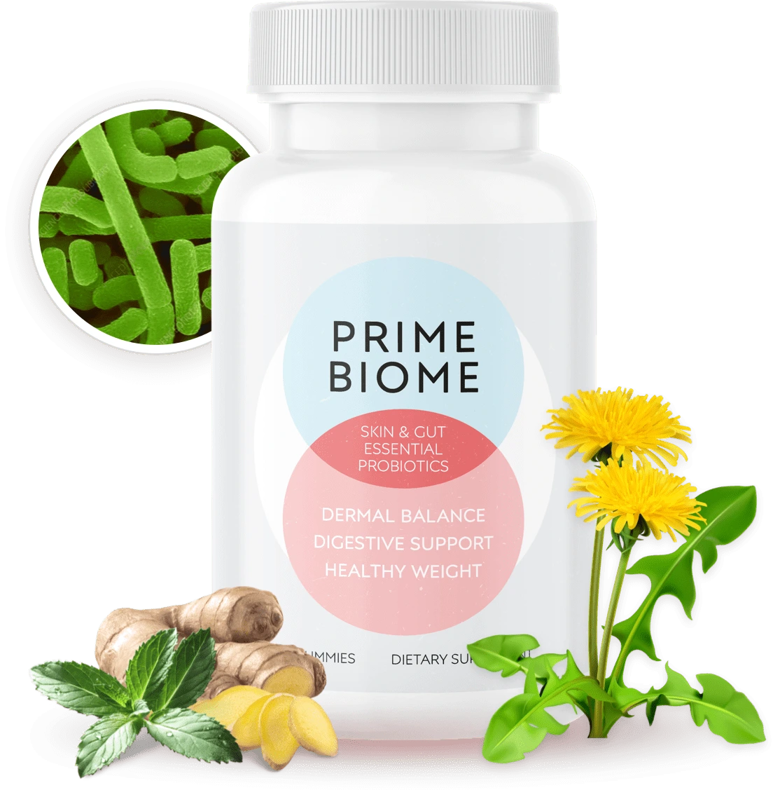
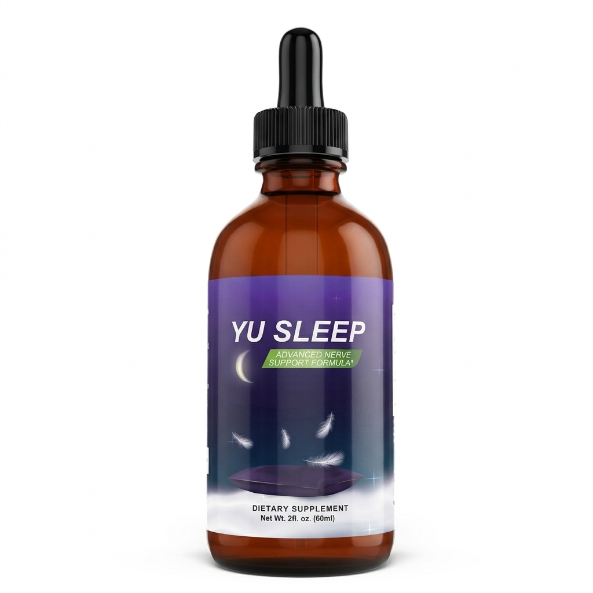
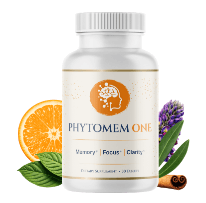
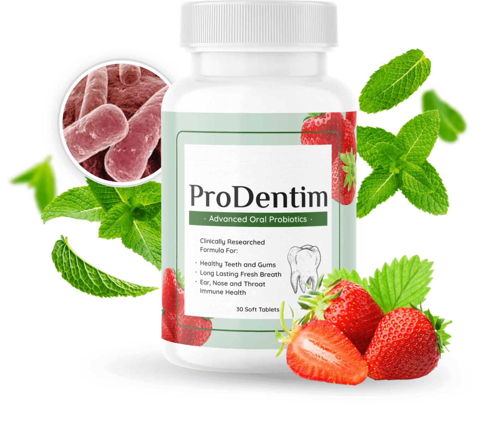

FemiCore is designed to support bladder health by targeting the microbiome imbalance, which causes involuntary muscle contractions and those sudden, uncontrollable pee leaks.
Inside every capsule of FemiCore, you’ll find an optimally dosed proprietary blend of exotic herbs, carefully mixed to complement one another and create a powerful,bladder-supporting formula.
DISCOVERSkin cell turnover rejuvenates skin by replacing old cells with new ones. This process is important to maintain in order to support healthy aging, optimal gut health and for the appearance of healthy youthful skin. PrimeBiome supports beneficial bacteria, helping to promote better skin health and a more youthful appearance.
DISCOVER
Instead of relying on high-dose melatonin or synthetic supplements that can leave you groggy the next morning, Yu Sleep works with your body’s natural rhythm, using plant-based ingredients backed by cutting-edge neuroscience and decades of clinical research.
Yu Sleep Supports Your Brain’s Sleep Pressure System—So You Fall Asleep Naturally, Sleep Deeper & Stay Asleep All Night, and Wake Up Rested!
DISCOVER
Phytomem One combines premium neuro-support nutrients with powerful metabolic-targeting ingredients to help you maintain sharp, vibrant memory at any age. Our formula is based on the latest discoveries in the microplastic-brain connection - designed to help neutralize the Plastic Stranglehold and restore your brain's ability to fuel itself from within.
DISCOVER
many common dental products (such as toothpaste and mouthwash) contain toxic ingredients that can destroy the microbiome in the mouth. This explains why teeth can thrive for hundreds of years outside the mouth (in fossils), while in our mouth they get ruined by something so simple as chocolate.
DISCOVER